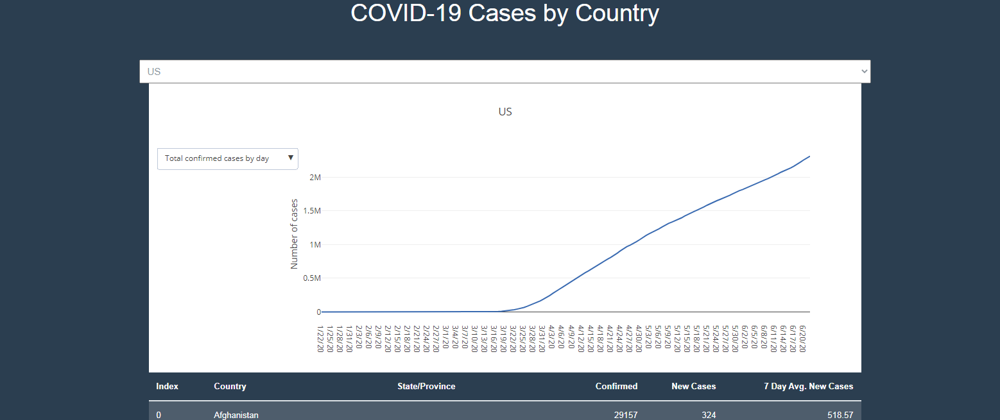

Click on the map for an interactive, up to date map.
This map shows the number of confirmed cases for each county in the
United States. Choosing the Dark background map will show the marker
circles better, especially for areas that are less affected.

Click on the line graph for an up to date graph.
This line graph shows the number of confirmed cases in the United States
by date. For future changes, I will fit the curve to a Gaussian function
to show when and how high the peak is expected to get and also when
the threat subsides.
